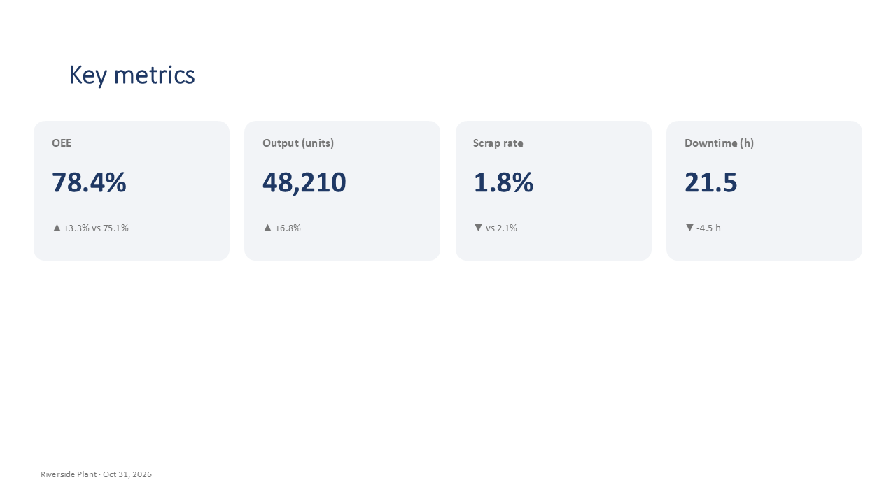
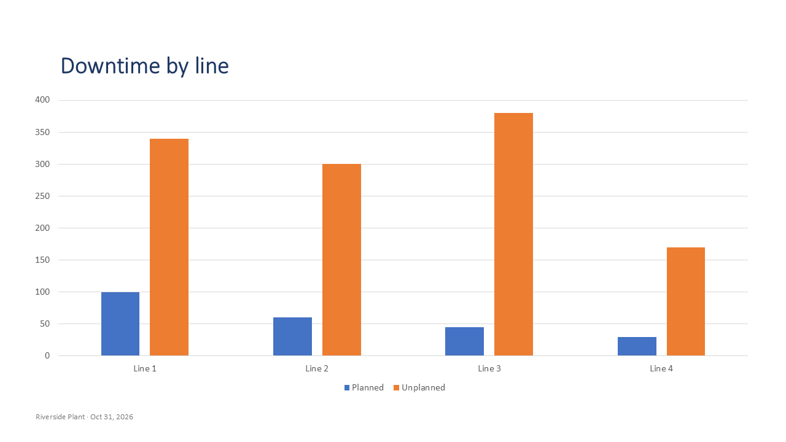
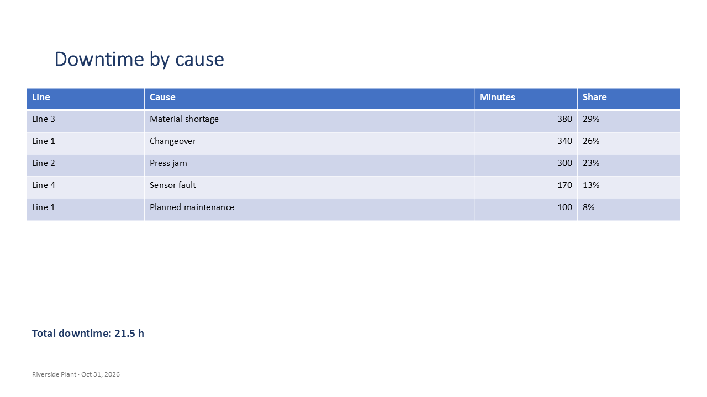
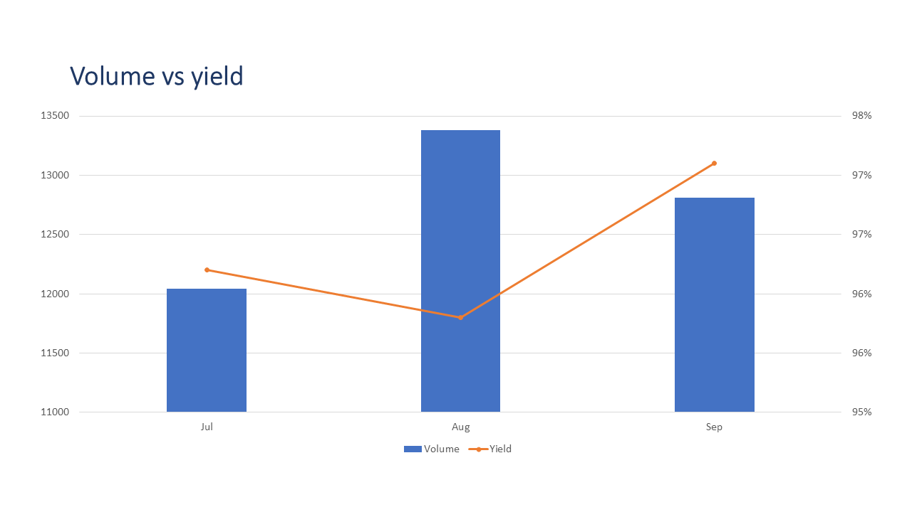
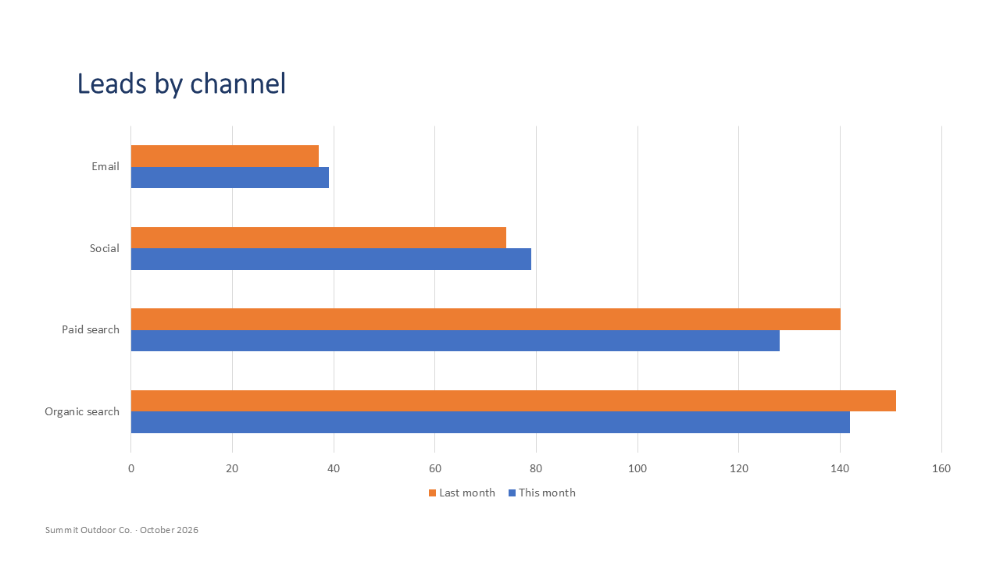

Your PowerPoint report, rebuilt from Excel in one click.
DeckForge fills your own template with this month's numbers: real PowerPoint charts and tables you can still edit, one deck or one per plant or client. It runs on your computer. Nothing is uploaded.
Windows and Mac · one-time license · 30-day refund

Excel in, branded decks out
Two minutes: a monthly ops review, then twenty client reports from one workbook.

How it works
You keep designing in PowerPoint. DeckForge only replaces what you mark.
Tag your deck
Type {{oee}} where a number goes. Name a table or chart in PowerPoint's Selection Pane. Your fonts, colors and layout stay.
Fill the workbook
DeckForge creates a workbook laid out for your template. Paste your export or type the numbers; Excel formats carry over.
Generate
One click makes the deck. Add a batch column and you get one deck per plant, region or client.
Built for the deck you rebuild every month
Native and editable
Real PowerPoint charts with their data inside. Right-click, Edit Data, and the numbers are there. Tables grow and shrink to fit.
Batch decks
One workbook makes a deck per site, customer or client, each with only its own rows.
Stays on your computer
No cloud, no account, no upload. Works on computers without internet too.
Plain-language checks
"No data for {{oee}} on slide 2: add a row with key oee to the kpis sheet." Nothing is written until it's right.
Smart slides
Repeat a slide for every plant; show the incidents slide only when there were incidents; trend arrows from last month's numbers.
One click next month
Save the job as a recipe. Next month: update the workbook, click Run. Or schedule the command-line version.
Start from a template pack
Three ready-made templates with sample data, free with the trial. Or tag your own deck in minutes.

OEE, output, scrap and downtime with trends.

Targets vs actuals, scrap by cause, volume vs yield.

One deck per client from one workbook.
Versus rebuilding it by hand
| By hand | DeckForge | |
|---|---|---|
| Monthly deck | Hours of copy and paste | Minutes |
| 20 client or plant decks | A day or more | Same minutes |
| Charts | Re-pasted, sometimes as pictures | Native, editable, data inside |
| Copy-paste mistakes | Happen | Checked before writing |
| Your design | Yours | Still yours |
Questions
Do I need PowerPoint installed?
No. DeckForge writes .pptx files directly. PowerPoint (or LibreOffice) is only used, if present, to show a preview inside the app.
Does it work on a Mac?
Yes: Windows and macOS.
Does my data leave my computer?
No. Templates, workbooks and decks never leave your computer. The only optional network calls are registering your license and checking for updates, and you can turn both off. It works on computers without internet.
Will it work with my company's template?
Very likely: text, tables and the common chart types (bar, column, line, area, pie, doughnut and combos). DeckForge checks your template and tells you, in plain words, about anything it can't fill. Template setup is also available as a service.
Where does the data come from?
An Excel workbook (or your system's export pasted into one). Direct database and historian connections are planned for a server edition.
What does "one-time license" mean?
You pay once and keep using the version you bought, forever. Twelve months of updates are included. After that, renewing updates is optional.
What if it doesn't work for me?
Try it free first; the trial only adds a small "Made with DeckForge" note to each slide. After buying, there's a 30-day refund. See the refund policy.
Get early access
One email when DeckForge is ready, with the launch discount. No newsletter, no sharing your address.